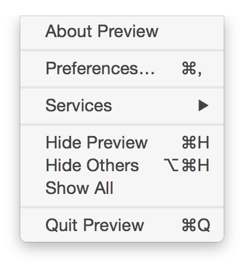

Mac Tips
Use arrow keys to navigate
Speed
Keyboard Shortcuts
Launchers
Dedicated, Native Apps
Keyboard Shortcuts
Speed
Lane, D. M., Napier, H. A., Peres, S. C., & Sándor, A. (2005). Hidden costs of graphical user interfaces: Failure to make the transition from menus and icon toolbars to keyboard shortcuts. International Journal of Human-Computer Interaction, 18(2), 133-144.Six participants performed common commands using menu selection, icon toolbars, and keyboard shortcuts. The keyboard shortcuts were, as expected, the most efficient. We conclude that even experienced users are inefficient in their use of graphical interfaces.
Menus
Finding Commands
CheatSheet
CheatSheet
DownloadCustom Shortcuts

System & Finder
Home
Your user folder /Users/edwardloveall/
Abbriviated ~/
Dialogue boxes
Jump to:
⌘⇧D Desktop
⌘⇧H Home Folder
⌘⌥L Downloads
⌘⇧A Applications
⌘⇧C Computer
Other Commands:
⌘⇧G Go To Folder
⌘⌫ Move to Trash
⌘⇧⌫ Empty Trash
Zoom

Miscellaneous
⌘Tab Switch Apps
⌘` Switch Windows
⇧Sound Toggle SFX
Esc Auto-Complete (sometimes)
⌘⇧⌥V
Paste & Match Style
Save as PDF
Text Movement
⌥ Word
⌘ Line
fn⌫ Delete Forward
Finder
PSA: Don't use disclosure triangles
PSA:

PSA:
Path Bar
Traversing Windows
⌘↓ Open
⌘↑ Close
⌘] Forward
⌘[ Back
Preview
Drag application or folder onto Preview to see all graphics
Keyword Searching
http://reddit.com/r/pics
Keyword Searching
r Reddit
imdb IMDB (duh)
so StackOverflow
tw Twitter
w Wikipedia
y Youtube
ama Amazon
Apps
Launchers
Alfred
Launchbar
Quicksilver
Divvy
Airmail
Airmail
Multiple accounts
Native Mac commands
Dock Notifications
Generic IMAP
RTL Language support
Won't change layouts on you every 6 months
Dash
Many, many languages
Works offline
Doc set groups
Xcode plugin
Alfred plugin
Cheatsheets
Resources
Podcasts
Mac Power Users
Systematic
Blogs
One Thing Well
Brett Terpstra
Showoff
⌘⌥^8 Invert Screen
⌘^D Look up in Dictionary
⌘^Space Special Characters
⇧ Animate slowly